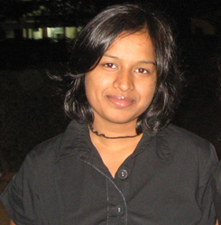

|  | Sarika Goel, Graduate Student
(LSAC) |
I am a fourth year PhD student working with Enrique Iglesia on Synthesis and Catalytic Consequences of Metal and Oxide Clusters Encapsulated within Zeolites. I completed my undergraduate education from the Department of Chemical Engineering at the Indian Institute of Technology, Delhi in 2009.
Ph.D., Chemical Engineering, University of California, Berkeley, Fall 2010 - Continuing
B.Tech. Chemical Engineering, Indian Institute of Technology, Delhi, Spring 2009
Wu, Z., Goel, S., Choi, M., Iglesia, E. Hydrothermal Synthesis of LTA-Encapsulated Metal Clusters and Consequences for Catalyst Stability, Reactivity and Selectivity. Journal of Catalysis, 2014, 311, 458.
Goel, S.; Wu, Z.; Zones, S. I.; Iglesia, E. Synthesis and Catalytic Properties of Metal Clusters Encapsulated within Small-Pore (SOD, GIS, ANA) Zeolites. Journal of the American Chemical Society, 2012, 134 (42), 17688.
Thurecht, K. J.; Gooden, P. N.; Goel, S.; Tuck, C.; Licence, P.; Irvine, D. J. Free-Radical Polymerization in Ionic Liquids: The Case for a Protected Radical. Macromolecules 2008, 41 (8), 2814.
Sarika Goel, Zhijie Wu, Stacey I. Zones and Enrique Iglesia, Metal and Oxide Clusters Encapsulated Within Zeolites: Synthesis, Shape Selective Properties and Protection From Organosulfur Poisons, 2013 AIChE Annual Meeting, November 4, 2013, San Francisco, CA, USA.
Sarika Goel, Stacey I. Zones and Enrique Iglesia, Synthesis and Catalytic Consequences of Metal and Oxide Clusters Encapsulated within Zeolites, 23rd North American Meeting, June 5, 2013, Louisville, KY, USA.
Sarika Goel, Zhijie Wu and Enrique Iglesia, Synthesis and Structural and Functional Assessment of Encapsulated Metal and Oxide Clusters, Annual Meeting of the Pacific Coast Catalysis Society, September 24, 2012, Santa Barbara, California, USA.
Zhijie Wu, Sarika Goel, Minkee Choi and Enrique Iglesia, Metal and oxide clusters protected within small pore zeolites: synthesis, shape selective properties and inhibition by organosulfur compounds, 22nd North American Meeting, June 6, 2011, Detroit, MI, USA.
Fall 2011, CBE 142: Kinetics and Reaction Engineering with Prof. Alexander Katz
Spring 2013, CBE 154: Chemical Engineering Laboratory with Prof. Alexander Katz, Prof. Davis Graves, and Prof. Clayton J. Radke